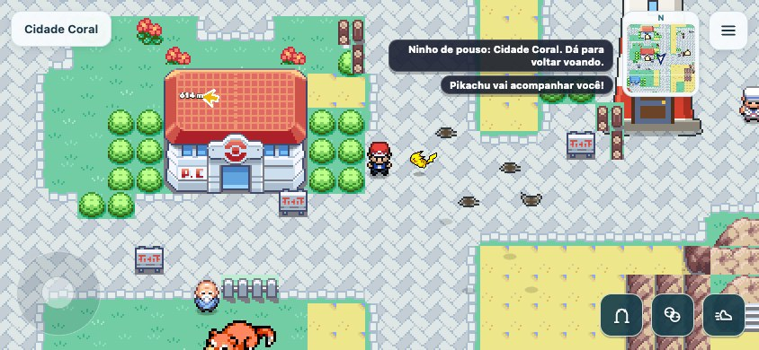
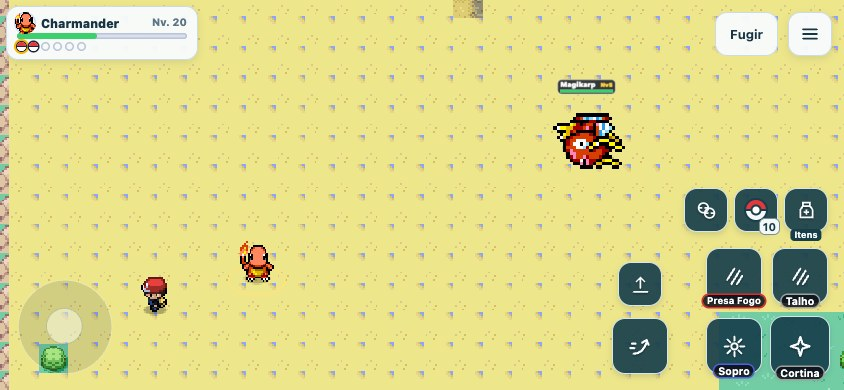
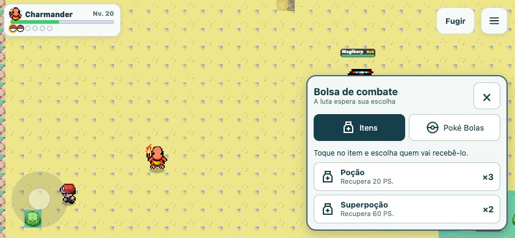
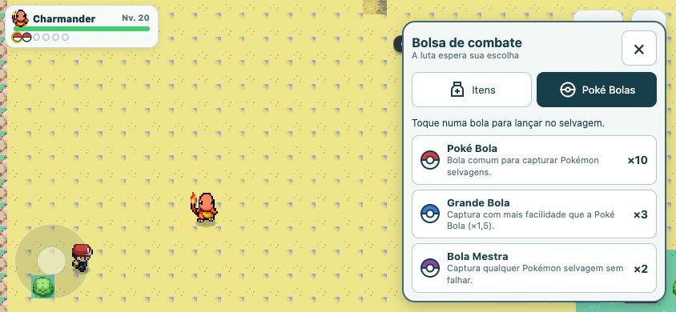

Acompanhante e bolsa rápida
Capturas reais em 844 × 390. Na equipe, escolha “Acompanhar treinador”. No combate, “Itens” abre os remédios e os modelos de Poké Bola.
Abrir jogo
O acompanhante segue o caminho a pé e espera durante as batalhas.
Movimento na coluna da esquerda; itens, captura e equipe juntos à direita, acima dos quatro golpes.
Escolha um item e o Pokémon que deve recebê-lo. As quantidades são as da mochila.
Escolha a bola para lançar. A captura direta continua disponível fora da bandeja.